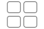

<link rel="import" href="../../../../bower_components/polymer/polymer.html">
<link rel="import" href="../../../../bower_components/paper-dialog-behavior/paper-dialog-behavior.html">
<link rel="import" href="../../../../bower_components/iron-icon/iron-icon.html">
<link rel="import" href="../../../../bower_components/iron-icons/iron-icons.html">
<link rel="import" href="../../../../elements/core-dialogs/dialog-styles.html">
<link rel="import" href="new-project-dialog-styles.html">

<dom-module id="habemus-new-project-dialog">
  
  <style include="dialog-styles"></style>

  <style include="new-project-dialog-styles">
  </style>

  <template>
    <div id="dialog">
      <header>
        <h1>[[ translate('browser-sw.new-project-dialog.create-new-project') ]]</h1>
      </header>

      <section id="body">
        <ul id="new-project-options">
          <li
            id="from-file"
            on-drop="_handleDrop">
            <div>
              
              <span
                class="label"
                hidden$="[[ _supportsDirectoryInput ]]">
                [[ translate('browser-sw.new-project-dialog.from-zip-file-1') ]]<br>
                [[ translate('browser-sw.new-project-dialog.from-zip-file-2') ]]
              </span>
<!--               <span
                class="label"
                hidden$="[[ !_supportsDirectoryInput ]]">upload a <br>folder
              </span> -->
            </div>
            <input
              id="file-input"
              hidden$="[[ _supportsDirectoryInput ]]"
              type="file"
              accept="application/zip"
              on-change="_handleFileInputChange">
<!--             <input
              id="directory-input"
              hidden$="[[ !_supportsDirectoryInput ]]"
              type="file"
              webkitdirectory
              directory
              on-change="_handleDirectoryInputChange"> -->
          </li>
          <li
            id="from-blank"
            on-tap="_handleFromBlankTap">
            <a href="/?template_url=/resources/blank-project.zip">
              
              <span class="label">
                [[ translate('browser-sw.new-project-dialog.from-blank-project-1') ]]<br>
                [[ translate('browser-sw.new-project-dialog.from-blank-project-2') ]]
              </span>
            </a>
          </li>
          <li id="from-starter-project">
            <a href="https://habemus.io/starter-projects/">
              
              <span class="label">
                [[ translate('browser-sw.new-project-dialog.from-starter-project-1') ]]<br>
                [[ translate('browser-sw.new-project-dialog.from-starter-project-2') ]]
              </span>
            </a>
          </li>
        </ul>
      </section>

      <section id="controls" hidden$="[[ !cancellable ]]">
        <button dialog-dismiss>
          [[ translate('browser-sw.new-project-dialog.cancel') ]]
        </button>
      </section>
    </div>

    <!-- starter projects iframe controls -->
    <div
      id="starter-projects-iframe-container"
      on-tap="_handleFromStarterProjectsCloseTap"
      hidden$="[[ !_showStarterProjectsIframe ]]">
      <iframe
        id="starter-projects-iframe"
        src="[[ _starterProjectsURL ]]"></iframe>
    </div>
  </template>

  <script type="text/javascript" src="new-project-dialog.js"></script>

</dom-module>
